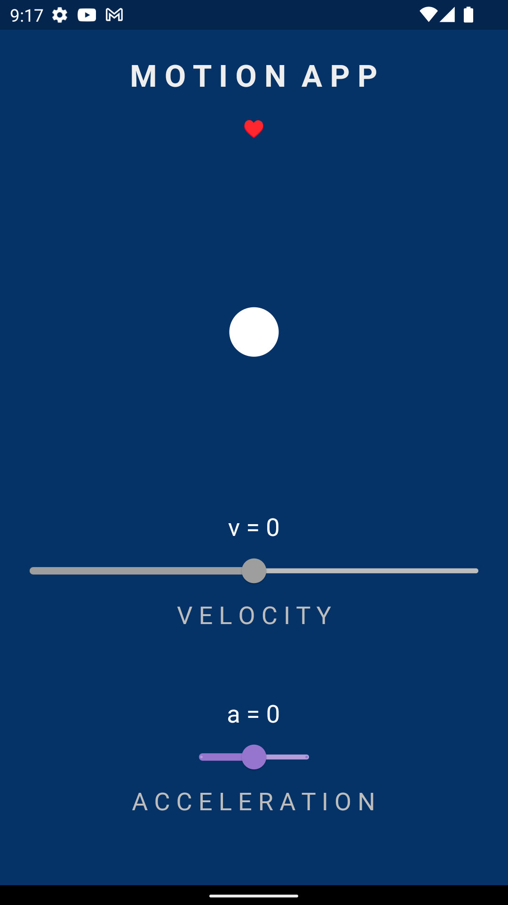

App Functionality
In this app, students can visualize how velocity and acceleration affect physical movement. They can change the velocity and acceleration to see how it impacts various objects in motion.
Velocity
Velocity is a vector quantity that describes the rate at which an object changes its position in a specific direction. It is measured in meters per second (m/s). In the app, students can adjust the velocity of objects to observe how their speed and direction change accordingly.
Acceleration
Acceleration is the rate of change of an object's velocity concerning time. It is also a vector quantity and is measured in meters per second squared (m/s²). Students can manipulate the acceleration of objects in the app to witness how it affects the object's motion, such as increasing or decreasing its speed or changing its direction.
Get Started
Download the app now and embark on a physics learning journey!